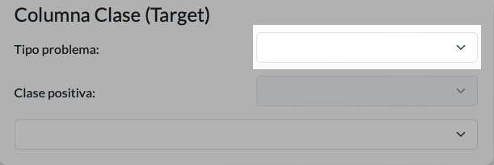
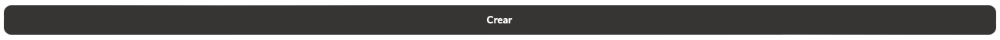

{{ gettext('A continuación, se muestra un tutorial de como crear un proyecto desde 0.') }}
{{ gettext('Por favor, pase a la siguiente página.') }}
{{ gettext('Selección Dataset I') }}
{{ gettext('Lo primero que tenemos que hacer para crear un proyecto es presionar el botón "Seleccione su archivo", tal y como se muestra en la imagen 1. El tipo de archivo que se acepta es el .csv.') }}
{{ gettext('Imagen 1: Botón de selección') }}
{{ gettext('Una vez se ha presionado el botón, lo siguiente es seleccionar el archivo a cargar. Es importante que el nombre de las columnas no contengan ninguna coma.') }}
{{ gettext('Imagen 2: Selección conjunto de datos') }}
{{ gettext('Por último, se nos actualizará la vista habilitando todos los campos que antes estaban desactivados.') }}
{{ gettext('Imagen 3: Vista actualizada') }}
{{ gettext('Selección Dataset II') }}
{{ gettext('Además, también se puede cargar un conjunto de datos desde el elemento que se indica en la imagen 4.') }}
{{ gettext('Imagen 4: Carga conjunto de datos') }}
{{ gettext('Si pulsamos en el elemento, nos aparecerán los conjuntos de datos que se han cargado con anterioridad.') }}
{{ gettext('Imagen 5: Conjuntos disponibles') }}
{{ gettext('Nombre del Proyecto') }}
{{ gettext('Cuando hemos seleccionado el conjunto de datos con el que vamos a trabajar, lo siguiente que haríamos sería introducir el nombre del proyecto.') }}
{{ gettext('Si nos fijamos en el apartado que pone "Nombre del proyecto" podremos ver un campo de texto y 2 iconos. En el campo de texto es donde deberemos introducir el nombre del proyecto.') }}
{{ gettext('Imagen 6: Campo de texto para introducir el nombre del proyecto') }}
{{ gettext(' El icono del micrófono sirve para activar un reconocimiento de voz que a partir de una determinada frase que contendrá las características del proyecto, se rellenarán los campos automáticamente con los datos dichos.
Si observa que al activarlo no sé rellena nada, es que o no le ha entendido o ha dicho una frase distinta a la determinada.') }}
{{ gettext('Imagen 7: Icono micrófono') }}
{{ gettext('El último icono sirve para abrir este tutorial que le ayudará a crear un proyecto.') }}
{{ gettext('Imagen 8: Icono interrogación') }}
{{ gettext('Columna Clase') }}
{{ gettext('Abajo del apartado anterior, nos encontramos la sección donde seleccionaremos la columna objetivo, el tipo de problema y la clase positiva (en caso de que la tenga) de nuestro problema.') }}
{{ gettext('Primero tendremos que seleccionar la columna clase. Está se selecciona en el último elemento de la sección como se muestra en la imagen 9.') }}
{{ gettext('Imagen 9: Elemento para seleccionar la columna clase') }}
{{ gettext('Cuando seleccionemos la columna objetivo, se nos seleccionará automáticamente el tipo de problema en función del tipo de variable que se haya seleccionado como clase pero también se puede seleccionar a mano.
Para seleccionar el tipo de problema le damos al primer elemento de la sección como muestra la imagen 10.') }}

{{ gettext('Imagen 10: Elemento para seleccionar el tipo de problema') }}
{{ gettext('Por último, podremos seleccionar una clase positiva en caso de que el problema sea de clasificación. Para seleccionarla nos tenemos que dirigir al segundo elemento de la sección como muestra la imagen 11.') }}
{{ gettext('Imagen 11: Elemento para seleccionar la clase positiva') }}
{{ gettext('Algoritmos') }}
{{ gettext('En la sección "Algoritmos" podremos observar los diferentes algoritmos que la aplicación soporta. Una vez que cargamos el dataset está sección se ve como en la imagen 12.') }}
{{ gettext('Imagen 12: Algoritmos que soporta la aplicación') }}
{{ gettext('Cuando seleccionamos la columna clase, entonces podremos seleccionar el algoritmo. Además dichos algoritmos se filtran automáticamente en función del tipo de problema como se observa en las imágenes 13 y 14.') }}
{{ gettext('Imagen 13: Algoritmos para Clasificación') }}{{ gettext('Imagen 14: Algoritmos para Regresión') }}
{{ gettext('Variables y Validación I') }}
{{ gettext('Lo último que tendríamos que configurar para poder crear nuestro proyecto, es seleccionar el tipo de validación y las variables externas y de control que queremos. Un aspecto importante es que si ya hemos seleccionado una variable como control, no podremos seleccionar la misma como externa o columna clase.
Esto también pasa si seleccionamos una variable como externa o columna clase.') }}
{{ gettext('Para seleccionar las variables de control lo único que tenemos que hacer es pulsar el botón que se resalta en la imagen 15. Abajo del botón se muestra el número de variables que se ha seleccionado frente al número total de variables que se puede seleccionar.') }}
{{ gettext('Imagen 15: Botón para seleccionar variables de control') }}
{{ gettext('Para seleccionar las variables externas pulsamos el botón que se resalta en la imagen 16. Al igual que antes, también se muestra la información del número de variables que hemos seleccionado frente al que podemos seleccionar.') }}
{{ gettext('Imagen 16: Botón para seleccionar variables externas') }}
{{ gettext('Variables y Validación II') }}
{{ gettext('Para seleccionar la validación lo único que tenemos que hacer es pulsar el botón que se resalta en la imagen 17. Abajo del botón se muestra la validación escogida.') }}
{{ gettext('Imagen 17: Botón para seleccionar la validación') }}
{{ gettext('Si le damos al botón, podremos ver los tipos de validación que podremos escoger. Podemos seleccionar entre una validación "Hold-out" y una validación "Cross Validation",
donde podremos seleccionar el porcentaje de train o el número bolsas respectivamente.') }}
{{ gettext('Imagen 18: Tipos de validación disponibles') }}
{{ gettext('Crear proyecto') }}
{{ gettext('Una vez ya hemos rellenado todas las secciones lo último que tenemos que hacer es pulsar sobre el botón "Crear".') }}

{{ gettext('Imagen 19: Botón para crear el proyecto') }}
{{ gettext('Si no le damos al botón y nos vamos de la vista, no pasa nada porque el proyecto se creará igualmente.') }}
{{ gettext('Y cuando le hayamos dado al botón o nos hayamos ido de la vista, podemos ir a la pestaña "Mis Proyectos" donde podremos ver que se ha creado perfectamente el proyecto.') }}